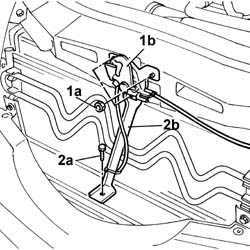
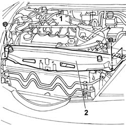
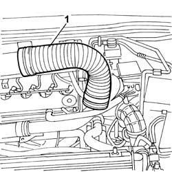
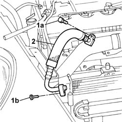

5040A50 PIPE from compressor to air conditioner condenser - R&R
- Path
- Procedures > 50 auxiliary units > 5040 AIR CONDITIONING CASING AND COMPONENTS > 5040A AIR CONDITIONING COOLING CIRCUIT > 5040A50 PIPE from compressor to air conditioner condenser - R&R
- Kind
- repair procedure (removal / refitting; the operation number is the code)
- Applies to
- all engines; all production periods
- Interactive page
- https://sloeber94.github.io/elrnDB-lThss/en/#/79170
Applies to: engines: 2.0 TB, 2.4 20V, 2.4 JTD 10V, 2.4 JTD 20V; all production periods
 Removing
Removing
 Refitting
RefittingSee in Op. 7040D50 ENGINE COMPARTMENT UPPER SOUND INSULATION SHIELD - R.R.
See in Op. 5040A10 Air conditioning coolant circuit - Drying and Repressurizing
Applies to: engines: 2.4 JTD 10V, 2.4 JTD 20V; all production periods
Applies to: engines: 2.0 TB, 2.4 20V; all production periods
See in Op. 1016A40 Ignition COIL COVER on cylinder head - R.R.
- Open the boot and disconnect the negative battery terminal.
1. Undo the fixing nuts (1a) and remove the bonnet lock (1b) from the housing in the crossmember.
2. Undo the lower nut (2a) and remove the lock reinforcement bracket (2b).

Applies to: engines: 2.0 TB, 2.4 20V; all production periods
1. Undo the retaining nuts.
2. Remove the upper front crossmember.

Applies to: engines: 2.0 TB, 2.4 20V; all production periods
1. Remove the cold air intake from the connector on the air filter.

Applies to: engines: 2.0 TB, 2.4 20V; all production periods
1. Undo the bolts fixing the pipe to the compressor (1a) and to the condenser (1b).
2. Remove the pipe from the compressor to the condenser.

Applies to: engines: 2.0 TB, 2.4 20V, 2.4 JTD 10V, 2.4 JTD 20V; all production periods
Refitting
Removing- Fit the pipe from the compressor to the condenser, compressor side and condenser side, tightening the fixing bolts.
- Fit the cold air intake on the connector for the air filter.
- Fit the upper front crossmember tightening the fixing nuts.
- Position the bonnet lock in the special housing in the crossmember and fit it tightening the fixing nuts.
- Fit the lock reinforcement bracket tightening the lower fixing nut.
Applies to: engines: 2.4 JTD 10V, 2.4 JTD 20V; all production periods
Applies to: engines: 2.0 TB, 2.4 20V; all production periods
See in Op. 1016A40 Ignition COIL COVER on cylinder head - R.R.
Applies to: engines: 2.0 TB, 2.4 20V, 2.4 JTD 10V; all production periods
- Connect the negative battery terminal.
See in Op. 5040A10 Air conditioning coolant circuit - Drying and Repressurizing
See in Op. 7040D50 ENGINE COMPARTMENT UPPER SOUND INSULATION SHIELD - R.R.
Applies to: engines: 3.0 V6, 3.2 V6; all production periods
- Operation not available
Topics linked from this page (4)
- 1016A40 Ignition COIL COVER on cylinder head - R.R.
- 1016A10 SOUND-PROOFING COVER - R.R.
- 5040A10 Air conditioning coolant circuit - Drying and Repressurizing
- 7040D50 ENGINE COMPARTMENT UPPER SOUND INSULATION SHIELD - R.R.